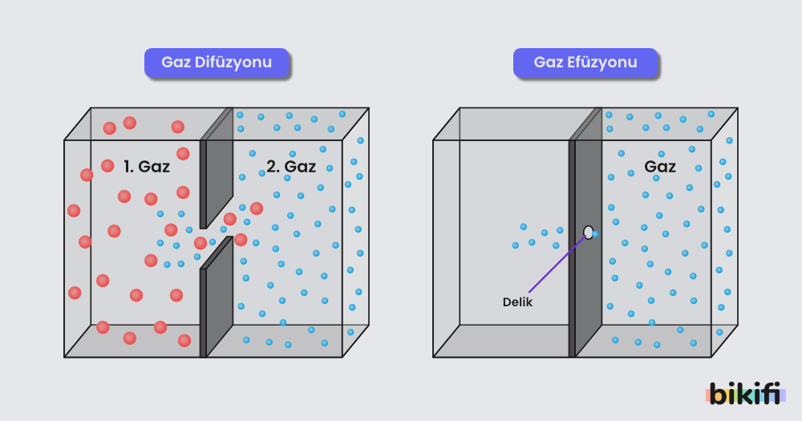

Gazların Kinetik Teorisi

gazların kinetik teorisi, gazların basınç, sıcaklık, hacim gibi makroskobik özelliklerini moleküler bileşim ve hareketlerine bağlı olarak açıklayan teoridir. Esas olarak, teori Isaac Newton'un kanısının tersine basıncın moleküller arası statik itmeden kaynaklanmadığını, bunun yerine belli hızlarda hareket eden moleküller arası çarpışmalardan kaynaklandığını söyler. Kinetik teori aynı zamanda kinetik-moleküler teori veya çarpışma teorisi olarak da bilinir.
İdeal bir gazın moleküllerinin, içinde bulunduğu kabın(küp) duvarlarına uyguladığı kuvvet
F = Nm(vx2 + vy2 + vz2) / 3L
Gazların kinetik teorisine göre
PV = (1/3)Nm(vx2 + vy2 + vz2)
Gazların kinetik teorisine göre sıcaklık
T = (1/3)Nm(vx2 + vy2 + vz2) / Nkb